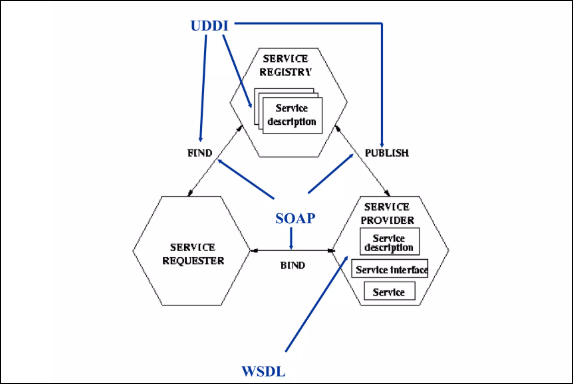

Arquitecturas Orientadas a Servicios y Servicios Web
Nota
Yo este tema no se para que lo damos, a día de hoy tengo entendido que se usa REST con JSON en vez de SOAP con XML. Creo que estaban mirando de cambiar el contenido de la asignatura así que no tengo claro que el tipo vaya a cambiar el examen y preguntar algo de esto. Pero más vale prevenir que curar.
6.1 El Desafío de la Comunicación en Entornos Web Abiertos
El problema fundamental de la computación distribuida a escala global radica en la necesidad de invocar métodos de objetos situados en máquinas remotas a través de redes no confiables como Internet. El objetivo es lograr que una aplicación cliente local pueda ejecutar lógica de negocio alojada en un servidor remoto (posiblemente ubicado en otro continente) con la misma transparencia que si fuera una llamada local.
6.1.1 Antecedentes y Limitaciones: La Era de RPC, CORBA y DCOM
Inicialmente, se utilizaron protocolos binarios que establecían conexiones directas mediante puertos específicos. Este enfoque fracasó en la web abierta por dos factores críticos:
-
Seguridad Perimetral: Los cortafuegos corporativos bloquean por defecto cualquier tráfico en puertos no estándar, impidiendo la comunicación externa.
-
Acoplamiento Tecnológico: Estas arquitecturas exigían homogeneidad, requiriendo que cliente y servidor operasen bajo la misma plataforma o lenguaje, lo que limitaba la interoperabilidad.
6.1.2 La Aproximación Basada en HTTP: El Uso de Java Servlets
Para superar las restricciones de seguridad, la ingeniería de software evolucionó hacia el aprovechamiento de la infraestructura existente de la Web. Se identificó que el puerto 80 (HTTP), utilizado para la navegación web estándar, permanecía abierto en casi todos los cortafuegos.
Esta estrategia dio lugar al concepto de Tunneling a través de Java Servlets. La técnica consistía en encapsular las peticiones de datos dentro de tráfico HTTP estándar, permitiendo que la información atravesara los cortafuegos sin ser bloqueada. Los Servlets actuaban como pequeños programas en el servidor que escuchaban estas peticiones en el puerto 80.
Aunque resolvió el problema de conectividad, introdujo una deficiencia estructural: los Servlets devolvían contenido en HTML (diseñado para presentación visual), obligando al cliente a realizar un parsing complejo para extraer los datos. Esto generaba un sistema frágil y difícil de mantener, donde cualquier cambio en la interfaz visual rompía la lógica de comunicación.
6.1.3 La Evolución hacia la Arquitectura Orientada a Servicios (SOA)
Como respuesta a la necesidad de una comunicación robusta, estandarizada y capaz de atravesar cortafuegos, surgió la Arquitectura Orientada a Servicios (SOA). Esta arquitectura propuso una solución definitiva al combinar la ubicuidad del transporte web con un formato de datos estricto.
La ecuación fundamental de SOA en el contexto de los Servicios Web se define por la integración de dos estándares: el Protocolo HTTP como medio de transporte universal para garantizar la conectividad, y el lenguaje XML para la representación de datos, asegurando que la información sea estructurada, legible por máquinas e independiente de la plataforma de presentación.
6.2 Arquitectura SOA
SOA (Arquitectura Orientada a Servicios): Es un estilo arquitectónico para construir sistemas distribuidos basado en la integración de servicios autónomos, débilmente acoplados e interoperables. Permite que aplicaciones desarrolladas en tecnologías heterogéneas se comuniquen mediante estándares abiertos, fundamentalmente combinando un transporte universal (HTTP) con un formato de datos estructurado (XML).
La arquitectura se basa en tres actores y cuatro estándares fundamentales:
| Actor | Acción | Estándar Clave | Función del Estándar |
|---|---|---|---|
| Proveedor | Crea y expone | WSDL | Descripción: Fichero XML que define qué hace el servicio (interfaz) y cómo llamarlo. |
| Registro | Directorio ("Páginas Amarillas") | UDDI | Publicación: Donde se registran los servicios para ser encontrados. (Nota: Baja implantación real). |
| Consumidor | Busca y usa | SOAP | Mensajería: Formato del sobre XML para enviar la petición y recibir la respuesta. |
| (Todos) | Canal de comunicación | HTTP | Transporte: La carretera por la que viajan los mensajes SOAP. |
Flujo de Funcionamiento (Publish - Find - Bind):
- Despliegue (Provider): El proveedor crea el servicio y su contrato (WSDL) accesible vía URL.
- Publicación (Provider
UDDI): Registra el servicio en el directorio UDDI para que sea visible. - Descubrimiento (Consumer
UDDI): El consumidor busca en UDDI y obtiene la URL del WSDL. - Generación (Consumer): Con el WSDL, el consumidor genera automáticamente los Stubs/Proxies (clases locales para comunicar).
- Invocación (Consumer
Provider): Se lanza la petición encapsulada en SOAP a través de HTTP.

Gracias al uso de XML, se pueden integrar aplicaciones dispares:
- Lenguajes diferentes: Se traduce de XML al lenguaje local (Java, Python, C#, etc.).
- Modelos de datos diferentes: Se traduce el modelo del formato XML al modelo interno de la aplicación.
6.3 El Manual de Instrucciones: WSDL
Para conectar tu código con un servicio remoto, necesitas un contrato: el WSDL (Web Service Description Language). Es un XML jerárquico dividido en dos bloques:
6.3.1 Descripción Abstracta (La Lógica - El "Qué")
Define la interfaz funcional sin importar el lenguaje de programación.
types(Diccionario): Define los datos (int,Cliente) usando XSD (XML Schema).message(Paquetes): Combina los datos anteriores para formar entradas y salidas.portType(Interfaz): Es el agrupador clave (como unainterfaceJava). Contiene las operaciones.operation(Funciones): Define la acción (sumar) conectando un mensaje de entrada con uno de salida.
Jerarquía:
typescomponen messageusados en operationagrupados en portType.
6.3.2 Descripción Concreta (La Red - El "Cómo")
Baja la lógica a tierra definiendo la conexión física.
binding(Protocolo): Asigna un protocolo concreto (ej. SOAP sobre HTTP) alportType.service(Servidor): Agrupa los puertos.port(Dirección): Une unbindingcon una URL física (Endpoint).
6.3.3 Resumen Práctico (WSDL vs Java)
| Elemento WSDL | Equivalente Java | Función |
|---|---|---|
types |
Clases / Beans | Estructura de datos. |
message |
Argumentos | Paquete de datos de E/S. |
portType |
interface |
Agrupa métodos abstractos. |
operation |
Método | Firma de la función (sumar). |
binding |
Implementación | Protocolo (SOAP/HTTP). |
service |
Instancia | URL del servicio. |
6.4 Protocolo SOAP (La Invocación)
SOAP (Simple Object Access Protocol) es el estándar XML para invocar servicios. A diferencia de REST, es un protocolo estricto basado en mensajes.
- Filosofía: Es sin estado (stateless) y, por defecto, unidireccional (one-way).
- Sincronía: Logra el modelo Petición-Respuesta apoyándose en el transporte (HTTP).
6.4.1 Estructura del Mensaje (El Sobre)
Todo mensaje SOAP es un documento XML con tres partes:
- Envelope (Sobre): Raíz obligatoria que encapsula todo.
- Header (Cabecera) - Opcional: Metadatos (seguridad, transacciones). Puede ser procesado por nodos intermediarios.
- Body (Cuerpo) - Obligatorio: La carga útil (payload) con los datos de negocio. Solo para el destinatario final.
Atributos Clave de la Cabecera
Permiten controlar el flujo a través de intermediarios:
role(¿Quién?): Define qué nodo debe leer la cabecera (next,ultimateReceiver).mustUnderstand(¿Obligatorio?): Si estruey el nodo no entiende la etiqueta, debe fallar.
6.4.2 Estilos de Invocación (Body Styles)
SOAP define dos formas de estructurar el XML dentro del Body:
| Estilo | Filosofía | Características |
|---|---|---|
| Document | "Te envío datos" | Flexible. El XML es arbitrario. No se ve el nombre del método explícitamente. |
| RPC | "Ejecuta esta función" | Rígido. Simula una llamada a código (<metodo><arg1>...</arg1></metodo>). |
6.4.3 Flujo de Ejecución (Arquitectura)
El viaje del mensaje desde tu código Java hasta el servidor remoto:
- Código Cliente: Llama al método local (
stub.sumar(5,5)). - Stub Cliente: Delega en el Motor SOAP (JAX-WS).
- Motor SOAP: Serializa a XML (SOAP) y lo pasa al Cliente HTTP.
- Red: El mensaje viaja por HTTP (POST).
- Router SOAP (Servidor): Recibe el XML, lo parsea y decide a qué servicio llamar.
- Skeleton/Stub Servidor: Deserializa el XML a objetos Java.
- Implementación: Se ejecuta el código real (
public int sumar...).
6.5 Ejemplo Práctico: JAX-WS
A. El Servidor (Service Provider)
Se compone de tres partes: Contrato, Lógica y Despliegue.
- La Interfaz (Contrato). Define qué operaciones están disponibles.
@WebService
public interface Calculadora {
@WebMethod
int sumar(int a, int b);
}
- La Implementación (Lógica). El código real que ejecuta la suma.
@WebService(endpointInterface = "com.ejemplo.Calculadora")
public class CalculadoraImpl implements Calculadora {
public int sumar(int a, int b) { return a + b; }
}
- El Publicador (Despliegue). Arranca el servidor.
public class Publicador {
public static void main(String[] args) {
// Publica la implementación en una URL específica
Endpoint.publish("http://localhost:8080/miCalculadora", new CalculadoraImpl());
}
}
Método Clave: Endpoint.publish(url, implementor)
Es el interruptor de encendido.
- Arranca: Inicia un servidor HTTP ligero interno en el puerto 8080.
- Genera: Crea el WSDL dinámicamente en memoria.
- Expone: Habilita la escucha de peticiones SOAP en esa URL.
B. El Cliente (Service Consumer)
El cliente no tiene la lógica de la suma, solo invoca al servidor remoto.
public class Cliente {
public static void main(String[] args) {
try {
// 1. URL del WSDL (El Manual)
URL wsdlURL = new URL("http://localhost:8080/miCalculadora?wsdl");
// 2. QName (Identificador Único: Namespace + ServiceName)
QName qname = new QName("http://ejemplo.com/", "CalculadoraImplService");
// 3. Crear la Fábrica (Service)
Service service = Service.create(wsdlURL, qname);
// 4. Obtener el Proxy (Stub)
Calculadora proxy = service.getPort(Calculadora.class);
// 5. Invocación Remota (Marshalling -> Red -> Unmarshalling)
System.out.println("Resultado: " + proxy.sumar(10, 20));
} catch (Exception e) { e.printStackTrace(); }
}
}
Métodos Clave del Cliente
| Método | Función Técnica |
|---|---|
URL(...?wsdl) |
Apunta a la ubicación del contrato. Sin el ?wsdl al final, no funciona. |
QName |
Nombre Cualificado. Identifica al servicio exacto dentro del XML del WSDL. Se forma con el TargetNamespace (paquete invertido) y el ServiceName. |
Service.create() |
La Fábrica. Descarga el WSDL, lo valida y prepara la conexión. |
getPort() |
El Proxy (Stub). Crea un objeto local falso. Convierte tus llamadas Java (.sumar) en mensajes XML SOAP (Marshalling) y los envía por HTTP. |
Nota
En este tema miraros las cosas por encima, yo le metí mucho detalle y mucha explicación pero porque no entendía un carallo. Pero con entender un poco los conceptos principales malo será.